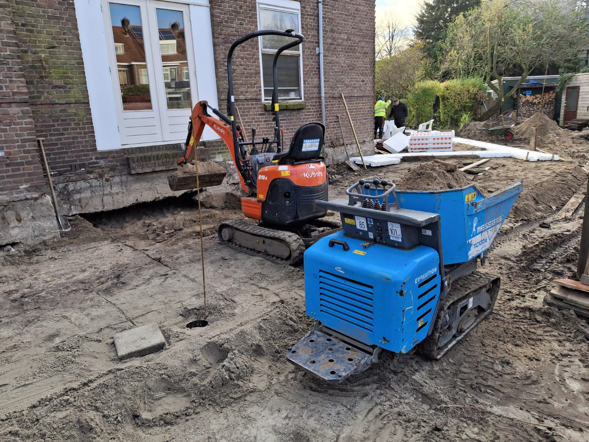

Hendrik-Ido-Ambacht
Bouwrijp maken en uitgraven
Uitgraven en afvoeren van grond voor een kleinschalig bouwproject, inclusief net afwerken van de bouwput.
Project besprekenEen selectie van recente werkzaamheden in de regio. Elk project is uitgevoerd met een duidelijke planning, nette uitvoering en heldere afstemming.
Hendrik-Ido-Ambacht
Uitgraven en afvoeren van grond voor een kleinschalig bouwproject, inclusief net afwerken van de bouwput.
Project besprekenDordrecht
Voorbereiden en plaatsen van een buitenkast met aardingswerkzaamheden, uitgevoerd volgens afspraak en norm.
Project besprekenRotterdam
Graven van sleuven voor kabels en leidingen met zorgvuldig aanvullen en een veilige, duurzame ondergrond als resultaat.
Project besprekenZwijndrecht
Grondwerk voor fundering en bestrating met focus op maatvoering, bereikbaarheid en vlotte doorlooptijd.
Project besprekenPapendrecht
Nauwkeurig inmeten en uitzetten van werkzaamheden vooraf, zodat uitvoering zonder verrassingen kan starten.
Project besprekenBarendrecht
Flexibele inzet voor kleinschalige infrawerkzaamheden met korte lijnen, heldere communicatie en nette oplevering.
Project bespreken